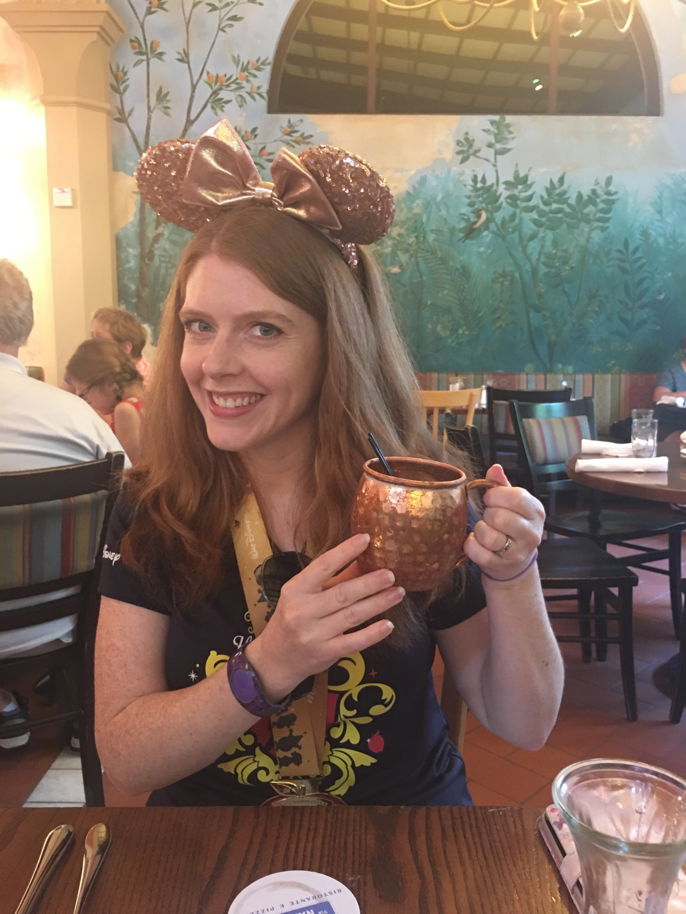

About Me

Jenny grew up in Virginia and graduated with a degree in Physics from Longwood College (now Longwood University). While in school, she worked as an Office Assistant in a grocery store's accounting office and quickly became the Store Accountant. She remained in this job after graduating and then found a job in a Commercial Real Estate firm's accounting office when she moved to Connecticut. She enjoyed her role there and stayed with them for 15 years until she moved to Pennsylvania last year. The opportunities in Pennsylvania were not as lucrative or fulfilling as her previous role, so she started her search for something totally different. And that search led her to Web Development. The field completely suits her problem-solving abilities and creativity, and even utilizes her understanding of Excel from all of those spreadsheets.
When Jenny isn't learning everything she possibly can about coding, she loves to sew, run, and travel. She often combines all three pastimes by sewing an outfit to run a marathon in and traveling to a fun destination for it. She has run a half marathon or full marathon in 11 states and 3 countries, all in outfits that she made herself. She has traveled all over the world, but her favorite destinations are Paris, Aruba, Maine, and Orlando.